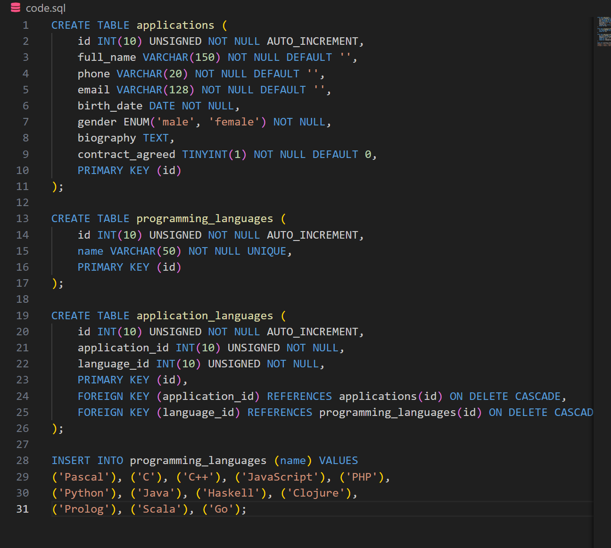
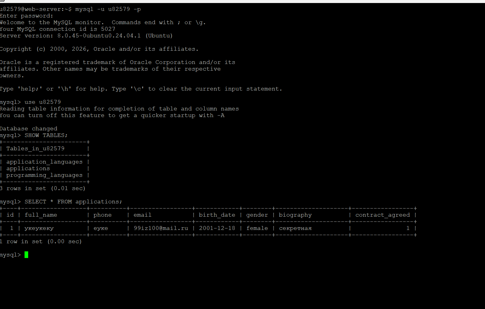
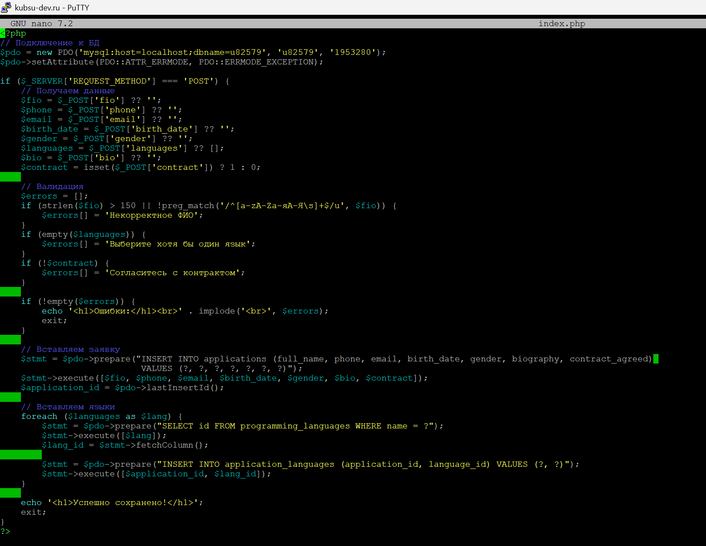
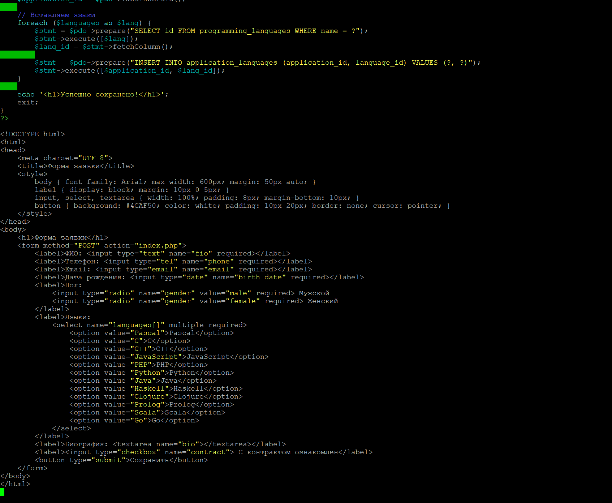
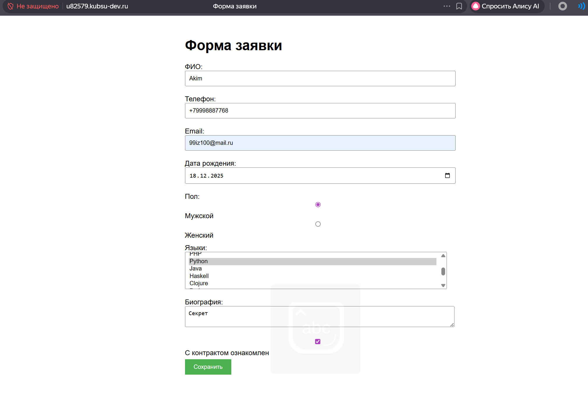
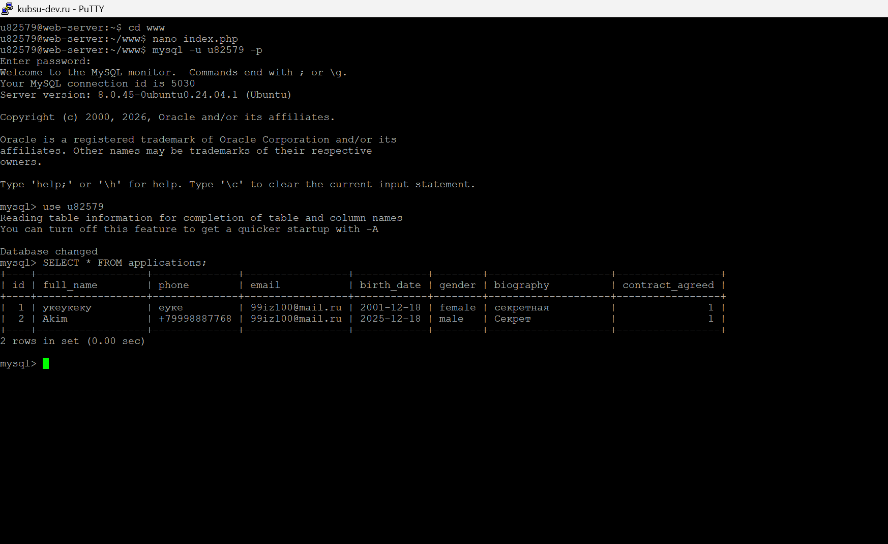

1.Для начала по ssh подключаемся к удаленному серверу kubsu-dev. Затем вводим команду mysql -u <логин> -p, а затем вводим пароль, затем вводим use <логин>, вводим запрос:

Далее смотрим на результат выполнения этого кода: (один юзер уже был добавлен вручную)

Далее, нам нужно зайти в файл index.php с помощью nano, который является внутренней логикой самого сервера, добавить в него как реагировать на POST-запрос, который будет отправляться браузером из HTML-формы, а также валидацию данных, которые будут в запросе. Если данные корректны - добавляем в Базу данных.


Теперь совершим запрос к Базе данных, отправив форму и прикрепим результат:

